Giải pháp hệ thống
6. Quy trình bán hàng
Xuất bán và trả hàng thành phẩm: yêu cầu giao hàng, quét tem giao hàng bằng PDA, phiếu giao hàng; và nhánh hàng bán bị trả lại: yêu cầu trả, phát hành tem, lập phiếu trả, hàng thực tế về.
6.1Yêu cầu giao hàng
Kho vận › Giao hàng
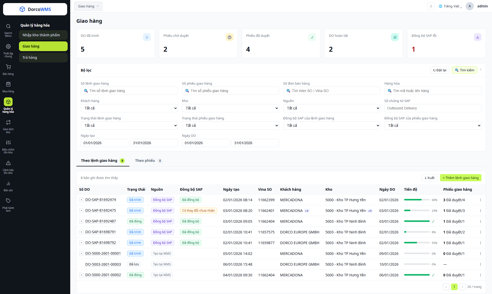
1 2 3 4 5 6 7 8 9 10- 1Thẻ tổng hợp: số lệnh giao hàng, phiếu chờ duyệt, phiếu đã duyệt, lệnh hoàn tất và số phiếu đồng bộ SAP lỗi.
- 2Bộ lọc: số lệnh, số phiếu, số đơn bán hàng (Inter SO / Vina SO), hàng hóa, khách hàng, kho, nguồn, số chứng từ SAP (Outbound Delivery), ngày tạo, ngày DO; lọc theo trạng thái đồng bộ SAP của lệnh và của phiếu.
- 3Tab Theo lệnh giao hàng / Theo phiếu: cùng một màn hình. Tab Theo phiếu là danh sách phiếu giao hàng (mục 6.3).
- 4Xuất và + Thêm lệnh giao hàng: xuất danh sách ra Excel; tạo lệnh giao hàng thủ công trên WMS.
- 5Nguồn: Đồng bộ SAP hoặc Tạo tại WMS, cho biết lệnh đến từ đâu.
- 6Đồng bộ SAP: chỉ có với lệnh nguồn SAP; lệnh tạo tại WMS để trống. Rê chuột vào nhãn “Có thay đổi chưa nhận” để xem số phiếu đang chặn.
- 7Khách hàng và Kho: lấy theo các dòng của lệnh; lệnh có nhiều khách hàng hoặc nhiều kho hiện thêm dấu +N.
- 8Tiến độ: thanh tiến độ số lượng đã giao so với số lượng yêu cầu.
- 9Phiếu giao hàng: số phiếu đã duyệt trên tổng số phiếu lập cho lệnh (một lệnh có thể giao nhiều lần). Dấu + đầu dòng mở các phiếu liên kết.
- 10Thao tác (⋮): Xem, Sửa, In DO, Tạo phiếu từ DO này… Nút hiện tùy theo nguồn và tình trạng của lệnh.
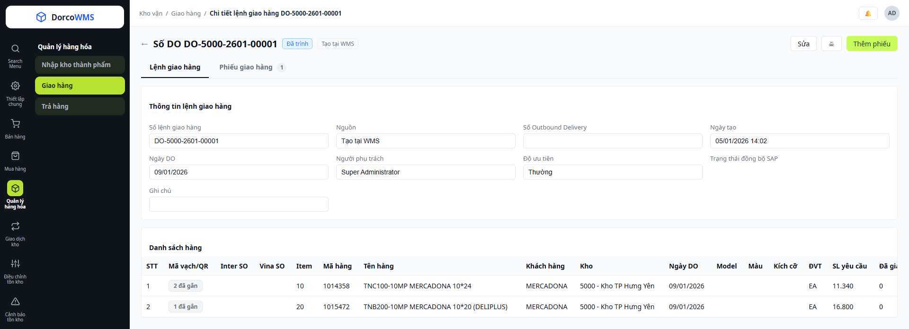
11 12 13 14 15 16 17- 11Số DO: hiện trên tiêu đề, kèm nhãn nguồn (Tạo tại WMS / Đồng bộ SAP).
- 12Nút thao tác: Sửa (chỉ lệnh tạo tại WMS), In DO, Thêm phiếu để lập phiếu giao hàng từ lệnh này.
- 13Tab Lệnh giao hàng / Phiếu giao hàng: tab thứ hai liệt kê các phiếu giao đã lập cho lệnh, kèm số đếm.
- 14Thông tin lệnh giao hàng: Số lệnh, Nguồn, Số Outbound Delivery (lệnh SAP), Ngày tạo, Ngày DO, Người phụ trách, Độ ưu tiên, Trạng thái đồng bộ SAP, Ghi chú. Lệnh nguồn SAP chỉ xem.
- 15Danh sách hàng: Inter SO, Vina SO, Item, mã và tên hàng, Model, Màu, Kích cỡ, ĐVT, SL yêu cầu, Đã giao, Còn lại, Số lô, Số PO khách hàng, Đơn giá… Kéo ngang để xem hết cột.
- 16Mã vạch / QR: “N đã gắn” là các tem gán sẵn cho dòng khi tạo lệnh tại WMS, bấm để xem tem. Lệnh nguồn SAP để trống.
- 17Khách hàng và Kho trên từng dòng: một lệnh có thể giao cho nhiều khách, lấy từ nhiều kho.
6.2Quét tem giao hàng
Ứng dụng PDA › Giao hàng
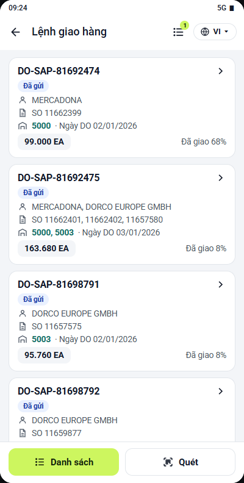
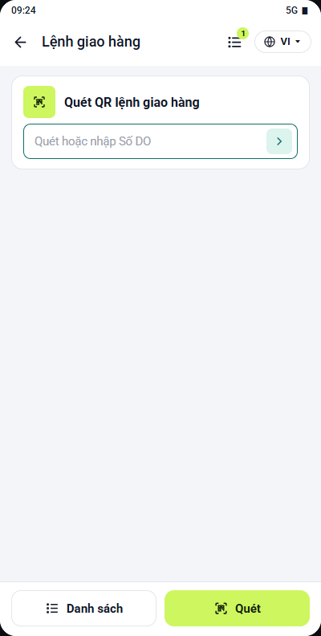
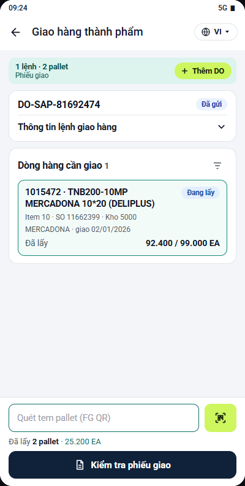
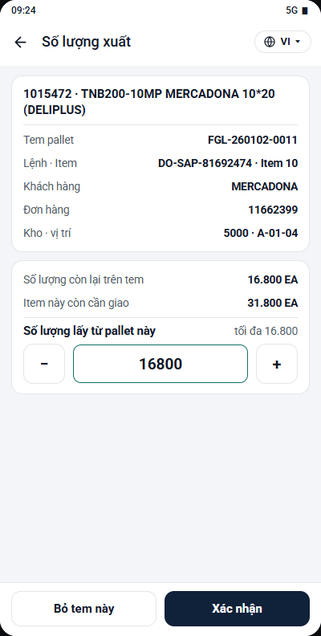
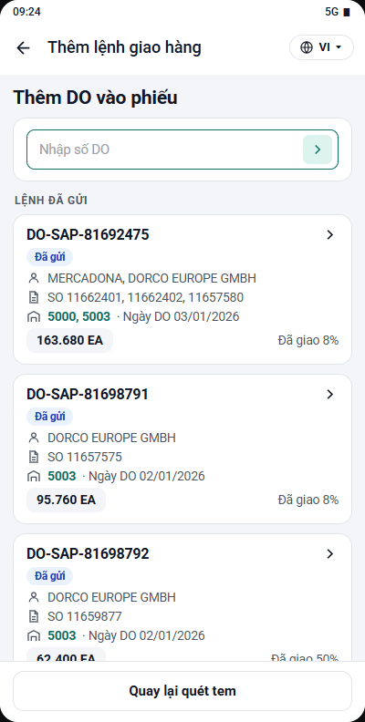
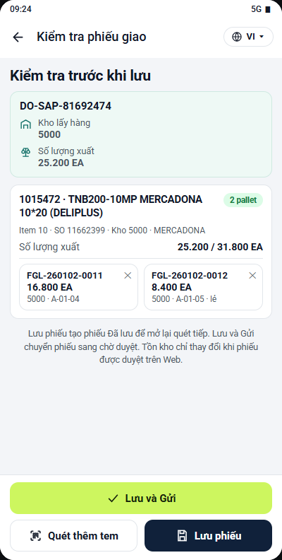
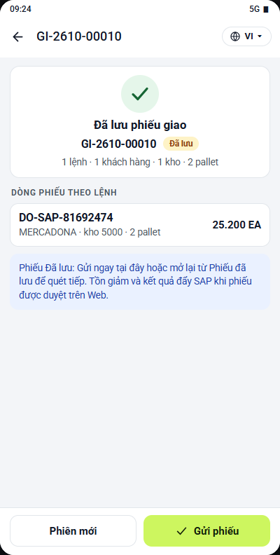
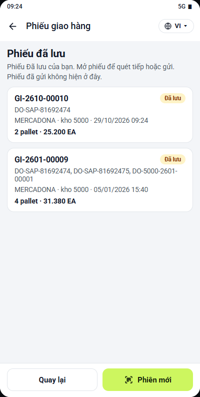
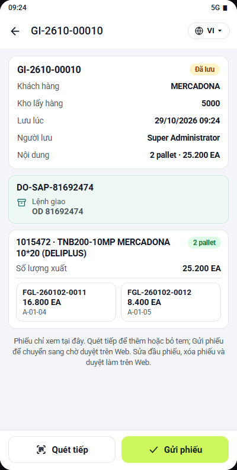
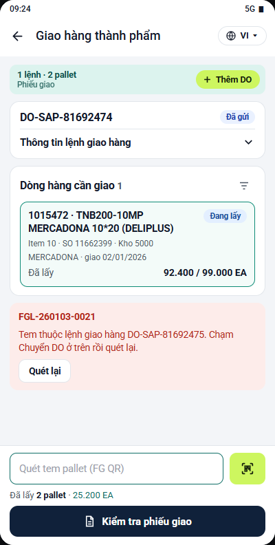
6.3Phiếu giao hàng
Kho vận › Giao hàng › Phiếu giao hàng
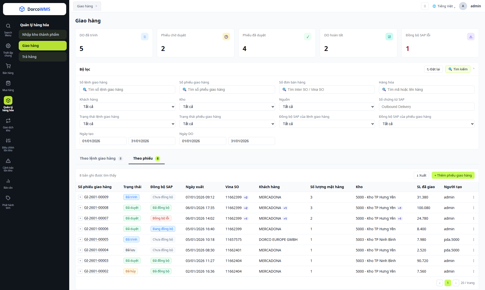
1 2 3 4 5 6 7- 1Tab Theo phiếu: danh sách phiếu giao hàng, cùng màn hình với lệnh giao hàng (6.1).
- 2Xuất và + Thêm phiếu giao hàng: xuất danh sách ra Excel; lập phiếu trên Web khi không quét bằng PDA.
- 3Dấu +: mở các lệnh giao hàng liên kết với phiếu và số lượng lấy cho phiếu từ từng lệnh.
- 4Đồng bộ SAP của từng phiếu.
- 5Vina SO, Khách hàng, Số lượng mặt hàng, Kho: gom từ các dòng của phiếu; phiếu có nhiều SO, khách hoặc kho hiện thêm dấu +N.
- 6SL đã giao: tổng số lượng của phiếu; phiếu có nhiều ĐVT ghi “nhiều ĐVT”, không cộng tổng.
- 7Thao tác (⋮): Xem, Sửa, Phê duyệt, Đồng bộ lại SAP, Hủy phiếu… Nút hiện tùy theo tình trạng của phiếu.
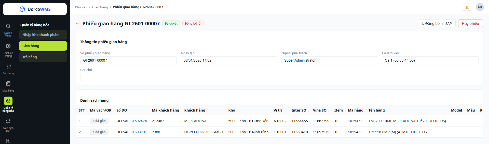
8 9 10 11 12 13 14- 8Số phiếu trên tiêu đề, kèm nhãn trạng thái đồng bộ SAP của phiếu.
- 9Nút thao tác: Đồng bộ lại SAP, Hủy phiếu; các nút Sửa, Duyệt… hiện tùy tình trạng phiếu.
- 10Thông tin phiếu: Số phiếu (tự sinh), Ngày lập, Người phụ trách, Ca làm việc, Ghi chú.
- 11Danh sách hàng: Inter SO, Vina SO, Item, mã và tên hàng, Model, Màu, Kích cỡ, ĐVT, SL đã xuất, Số PO khách hàng… Kéo ngang để xem hết cột.
- 12Mã vạch / QR: “N đã gắn”, bấm để xem tem của dòng, số lượng lấy và số lượng còn lại trên tem.
- 13Số DO, Mã khách hàng, Khách hàng, Kho trên từng dòng: một phiếu gom dòng của nhiều lệnh, nhiều khách, nhiều kho.
- 14Vị trí: vị trí (bin) lấy hàng của tem.
6.4Yêu cầu hàng bán trả lại
Kho vận › Trả hàng
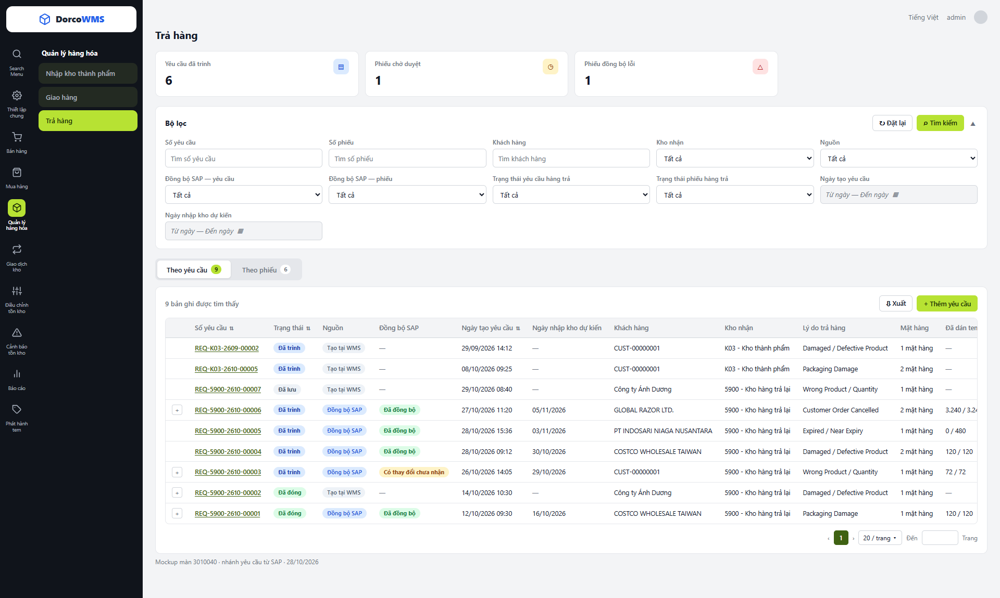
1 2 3 4 5 6 7 8 9- 1Thẻ tổng hợp: số yêu cầu, phiếu chờ duyệt và phiếu đồng bộ SAP lỗi.
- 2Bộ lọc: số yêu cầu, số phiếu, khách hàng, kho nhận, nguồn, ngày tạo yêu cầu, ngày nhập kho dự kiến; lọc theo đồng bộ SAP của yêu cầu và của phiếu.
- 3Tab Theo yêu cầu / Theo phiếu: cùng một màn hình. Tab Theo phiếu là danh sách phiếu trả hàng (mục 6.6).
- 4Xuất và + Thêm yêu cầu: xuất danh sách ra Excel; tạo yêu cầu tại WMS từ phiếu giao hàng (G/D Slip).
- 5Nguồn: Đồng bộ SAP hoặc Tạo tại WMS.
- 6Đồng bộ SAP: chỉ có với yêu cầu nguồn SAP; yêu cầu tạo tại WMS để trống (—). Rê chuột vào “Có thay đổi chưa nhận” để xem SAP đã đổi gì.
- 7Ngày nhập kho dự kiến: ngày hàng trả dự kiến về kho, theo yêu cầu từ SAP.
- 8Kho nhận: hàng bán trả lại nhận về kho 5900 - Kho hàng trả lại.
- 9Đã dán tem: số lượng đã có tem trên tổng số lượng trả (X / Y). Kéo ngang để thấy Tiến độ nhận và Thao tác (⋮).
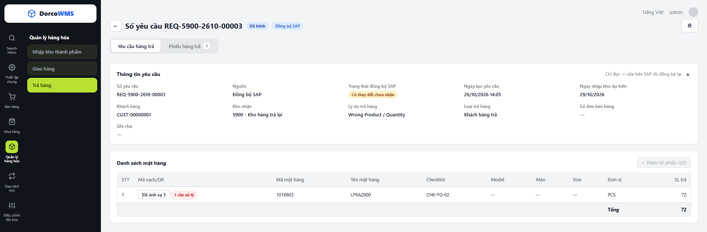
10 11 12 13 14 15 16 17- 10Số yêu cầu: hiện trên tiêu đề.
- 11Nguồn: nhãn Đồng bộ SAP / Tạo tại WMS. Yêu cầu nguồn SAP chỉ đọc (dòng chữ góc phải khung thông tin).
- 12Nút thao tác: In yêu cầu. Sửa, Xóa chỉ hiện với yêu cầu tạo tại WMS, tùy tình trạng.
- 13Tab Yêu cầu hàng trả / Phiếu hàng trả: tab thứ hai liệt kê các phiếu trả đã lập cho yêu cầu, kèm số đếm.
- 14Thông tin yêu cầu: Số yêu cầu, Nguồn, Trạng thái đồng bộ SAP, Ngày tạo, Ngày nhập kho dự kiến, Khách hàng, Kho nhận, Lý do trả hàng, Loại trả hàng, Số đơn bán hàng, Ghi chú.
- 15Danh sách mặt hàng: mã, tên, Checklist, Model, Màu, Size, Đơn vị, SL trả; dòng Tổng ở cuối bảng.
- 16Mã vạch / QR: “Đã ánh xạ N”, bấm để xem tem của dòng. Nhãn đỏ “N cần xử lý” đánh dấu tem dư khi SAP đổi số lượng.
- 17Checklist: mã checklist của dòng, nhận theo yêu cầu từ SAP.
6.5Phát hành tem
Phát hành nhãn › Phát hành tem thành phẩm / bán thành phẩm
6.6Lập phiếu trả hàng
Kho vận › Trả hàng › Phiếu trả hàng
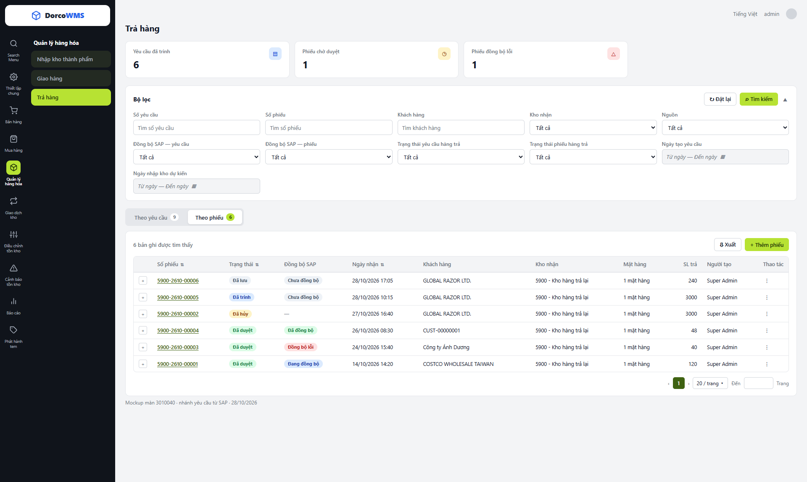
1 2 3 4 5 6 7- 1Tab Theo phiếu: danh sách phiếu trả hàng, cùng màn hình với yêu cầu hàng trả (6.4).
- 2Xuất và + Thêm phiếu: xuất danh sách ra Excel; lập phiếu trả hàng trên WMS.
- 3Dấu +: mở yêu cầu hàng trả liên kết với phiếu.
- 4Đồng bộ SAP của từng phiếu.
- 5Khách hàng và Kho nhận: mỗi phiếu một khách, một kho.
- 6SL trả: tổng số lượng của phiếu.
- 7Thao tác (⋮): Xem chi tiết, Sửa, Duyệt, Đồng bộ lại SAP, In phiếu, Hủy phiếu… Nút hiện tùy theo tình trạng của phiếu.
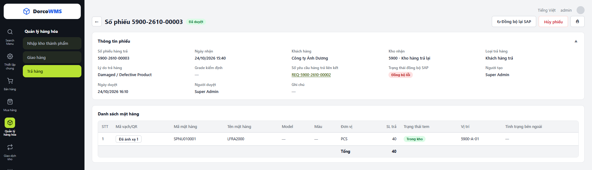
8 9 10 11 12 13 14 15 16 17- 8Số phiếu: hiện trên tiêu đề.
- 9Nút thao tác: Đồng bộ lại SAP, Hủy phiếu, In phiếu; các nút Sửa, Duyệt… hiện tùy tình trạng phiếu.
- 10Thông tin phiếu: Số phiếu (tự sinh), Ngày nhận, Khách hàng, Kho nhận, Loại trả hàng (Khách hàng trả / Đại lý trả / Trả nội bộ), Lý do trả hàng, Người tạo, Ngày và người duyệt, Ghi chú.
- 11Grade kiểm định: A Bán lại được / B Sửa chữa, đóng gói lại / C Hủy; nhập ở đầu phiếu, áp cho mọi dòng.
- 12Số yêu cầu hàng trả liên kết: bấm để mở yêu cầu.
- 13Trạng thái đồng bộ SAP của phiếu.
- 14Danh sách mặt hàng: mỗi dòng ứng với tem đã chọn, SL trả bằng SL trên tem; dòng Tổng ở cuối bảng.
- 15Mã vạch / QR: “Đã ánh xạ N”, bấm để xem tem của dòng.
- 16Vị trí: vị trí nhập của hàng; hàng chưa về hoặc đang thông quan đặt ở vị trí tạm 5900-TEMP-01.
- 17Tình trạng bên ngoài: nhập ở đầu phiếu, áp xuống mọi dòng.
6.7Hàng thực tế về
Ứng dụng PDA › Chuyển vị trí